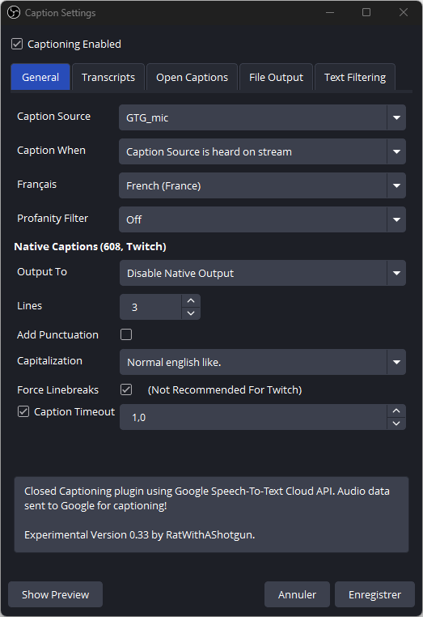
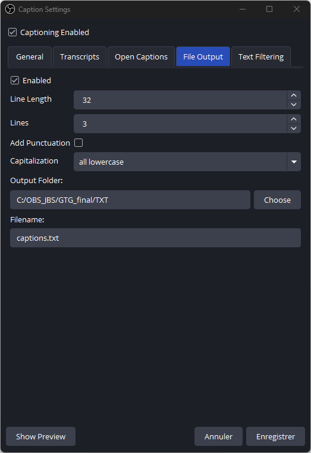

📦 Plugins & configuration OBS – GTG_FINAL
Cette page liste les plugins OBS nécessaires au projet, ainsi que la configuration de
Cloud Closed Captions et l’information sur le shader utilisé.
1. Plugins OBS requis
Transcription automatique de ta voix (STT) vers un fichier texte exploité par GTG.
Permet d’importer la collection de scènes fournie (GTG source copy.json)
avec toutes les sources et filtres pré-configurés.
Utilisé pour appliquer des shaders personnalisés (ex. flou radial) sur certaines sources GTG.
Animation de positions, tailles et filtres des sources (transition dynamique des overlays).
Effets de perspective 3D sur certaines sources (éléments d’UI).
Rendu du scoreboard via un fichier Markdown/CSS (source GTG_markdown).
Contours, lueurs et ombres portées pour les textes et éléments UI.
Effets de flou localisés sur des parties de l’overlay.
Effets CRT / glitch / rétro pour renforcer le style visuel GTG.
2. Configuration de Cloud Closed Captions
Dans les paramètres du plugin Cloud Closed Captions, vérifie :
- Language :
French (France)
- Output type : fichier texte (file output activé)
- Output folder :
C:\OBS_JBS\GTG_FINAL\TXT
- Filename :
captions.txt
Le fichier captions.txt est ensuite lu par GTG pour détecter les réponses.

Exemple de configuration onglet General.

Exemple de configuration de la sortie File Output.
3. Shader utilisé
Le projet utilise un shader personnalisé :
- Fichier :
zoom_blur_v2.shader
- Emplacement : fourni à la racine du pack
GTG_FINAL
- Emplacement cible : à placer dans le dossier suivant : C:\Program Files\obs-studio\data\obs-plugins\obs-shaderfilter\examples
- Usage : appliqué via le plugin Shader Filter sur certaines sources GTG (effet de flou radial / zoom).
⬅ Retour à l’installation (Étape 2)